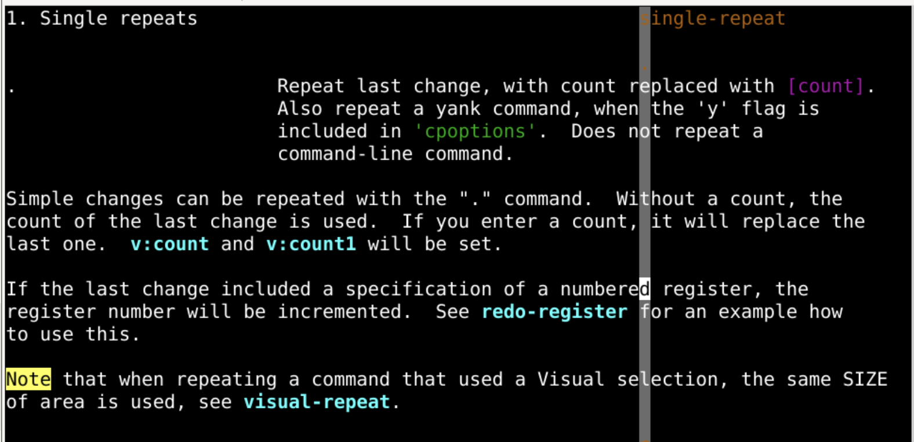
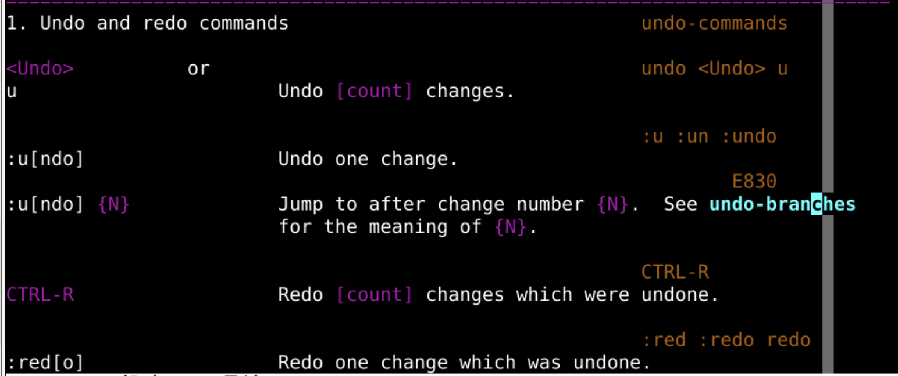
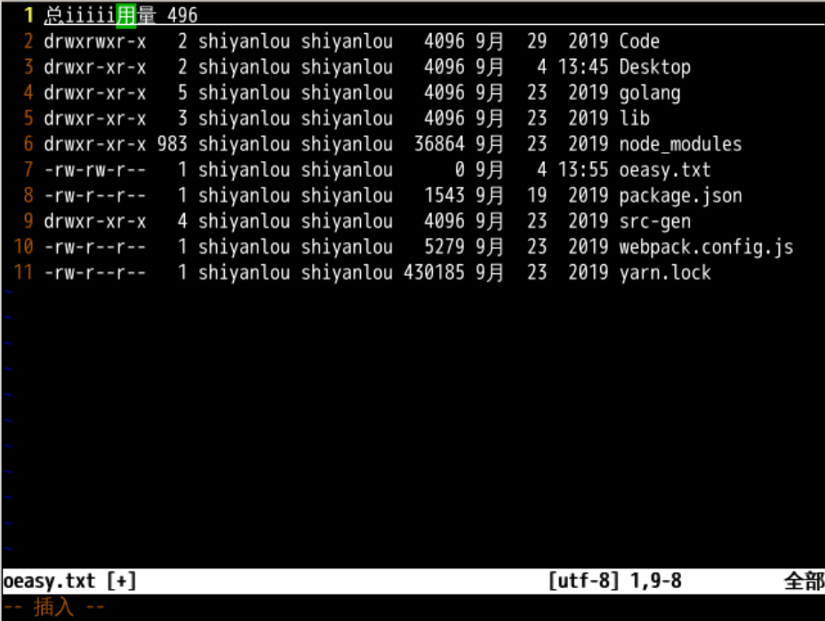
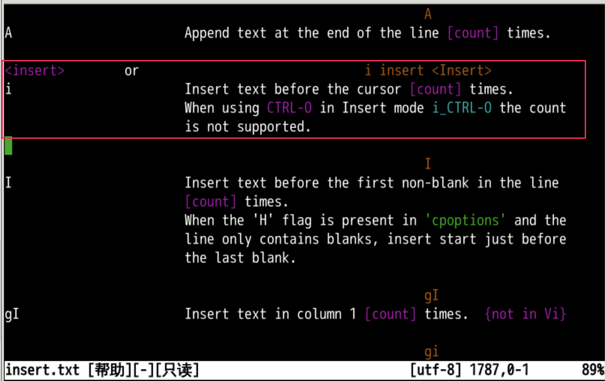
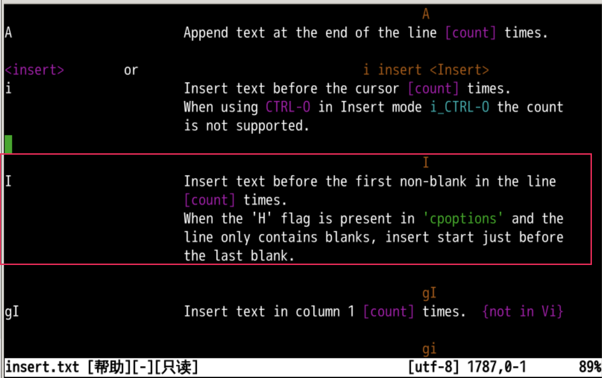
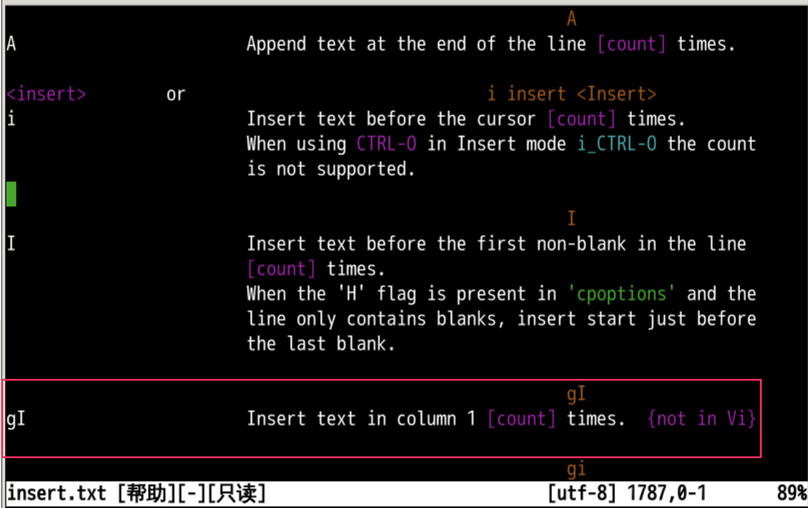

从头插入
回忆上节课内容🤔
- 上次我们学会了另存为命令
: saveas {file} - 还有这个直接保存命令
: w - 真的可以把修改存了 😀

下面我们来研究插入命令的细节。
插入命令
- 首先我们可以查询这个插入命令的帮助📕
:help insert- 简写为
:h i

- 我们可以看到小写
i是在当前光标的前面插入
切换模式
- 我们可以 i 进入插入模式
- esc 回到正常模式
- 然后反复切换
- 观察状态栏下面的提示
--插入--就是插入模式- 啥都没有就是正常模式
重复插入
- 我们可以先点击 i 进入插入模式
- 输入
oeasy 空格 - ctrl+c 回到正常模式
- 在正常模式下，按下 . 可以重复刚才的操作
- 再按下 . 可以再重复刚才的操作
- 还按下 . 可以还重复刚才的操作
- 这个 . 是什么意思
:h .

撤销插入
- 在正常状态下按下u可撤销操作
- 按一次u撤销一步
- 再按u再撤销
- 还按u还撤销
- 一直u按到头，就撤销到头
- 查询帮助
:h u

- 撤销了之后又反悔了可以么？
重做
- 反悔是重做
- 就在
u的帮助下面有介绍 - ctrl+r
- 在正常状态下按 ctrl+r 可撤销撤销操作
- 就是重做
- 按一次 u 撤销一步
- 再 ctrl+r 再撤销撤销
- 按一次 u 撤销一步
- 再 ctrl+r 再撤销撤销
- 好像可以来回来去拉锯
在前方插入
- 比如我们的光标当前所在的位置，在
用字的位置 - 按下 i 进入到插入模式
- 然后就在绿色的光标前面插入字符
- 这就是所谓的
before cursor的意思 - 就是插在光标之前

- 帮助手册怎么说的呢？
帮助手册
:h i可以查询帮助手册

- 周围还有些什么呢？
插在最前面
- 在
:h i帮助的周围可以有命令I - 如果我们使用大写的
I，不管你的光标在什么位置 - 插入位置在光标所在行所有文本的 最 前面
- 然后切换到插入模式

- 但是如果我想要在
最最前面插入呢？
在第一列插入

- 这就是各种从头插入的方式
- 我们来总结一下
总结
- 我们这次深入了 i 命令
- i 在当前的光标之前插入
- I 在本行文本的最前面插入
- 还有一些常用的编辑命令
- . 重做
- u 撤销
- ctrl+r 还原
- 关于插入，还有什么讲究吗？🤔
- 我们下次再说！👋